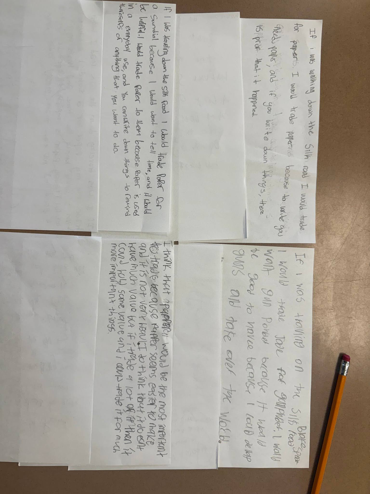

In this example, I am using an exit ticket that I gave to my students at the end of a lesson where we briefly covered the basics of the Silk Road during our China unit. Students were asked to imagine that they were traveling down the Silk Road, and they were asked to discuss what goods they would trade on the Silk Road, and to come up with a scenario as to why they would need that good. I will use exit tickets about once a week, especially when introducing a new major topic. Reading them allows me to gauge what students took away from what I had just taught them, and where they might have weak spots that I can focus more on in the future. This is extremely important to do just to make sure that I do not move from one topic to the next before students fully grasp what I have taught them.